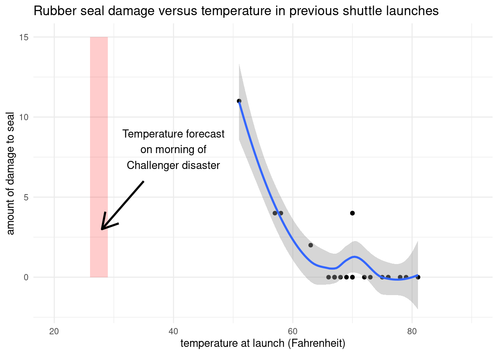
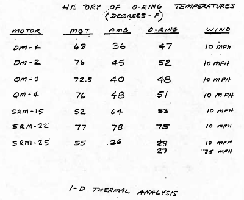
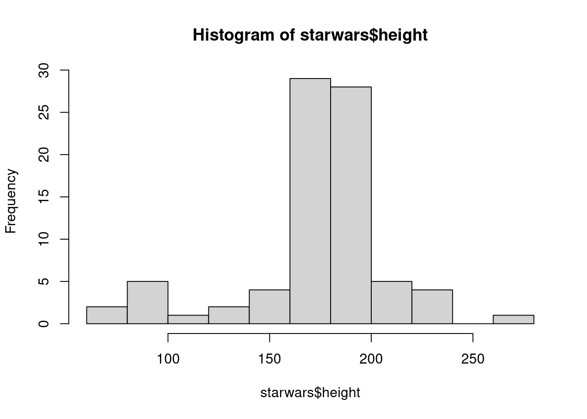
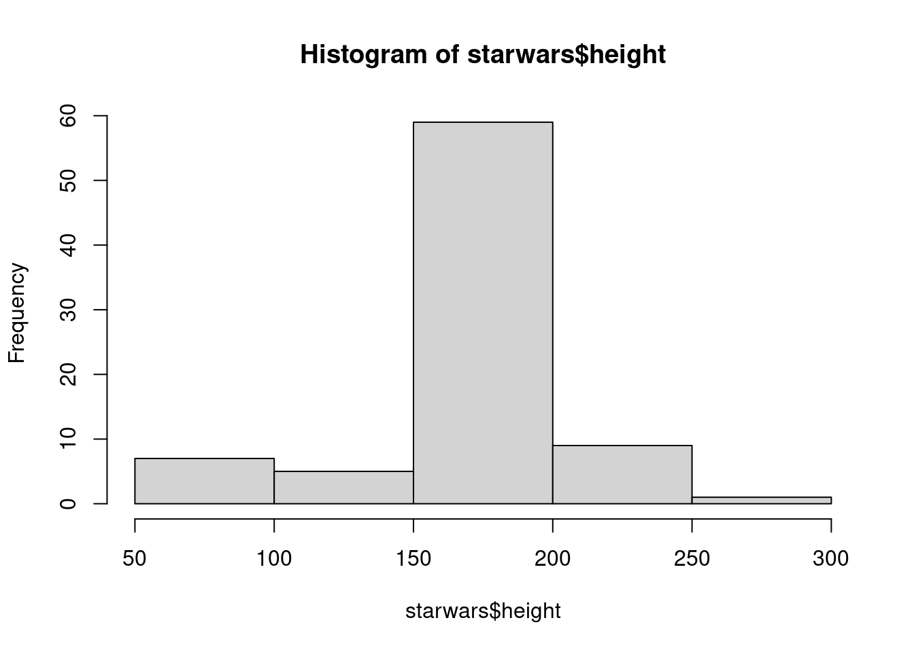
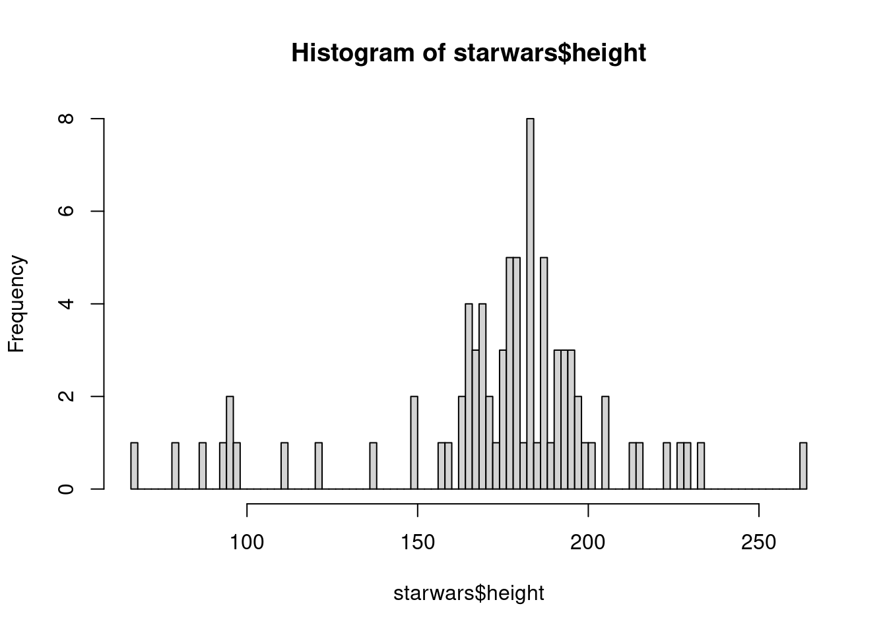
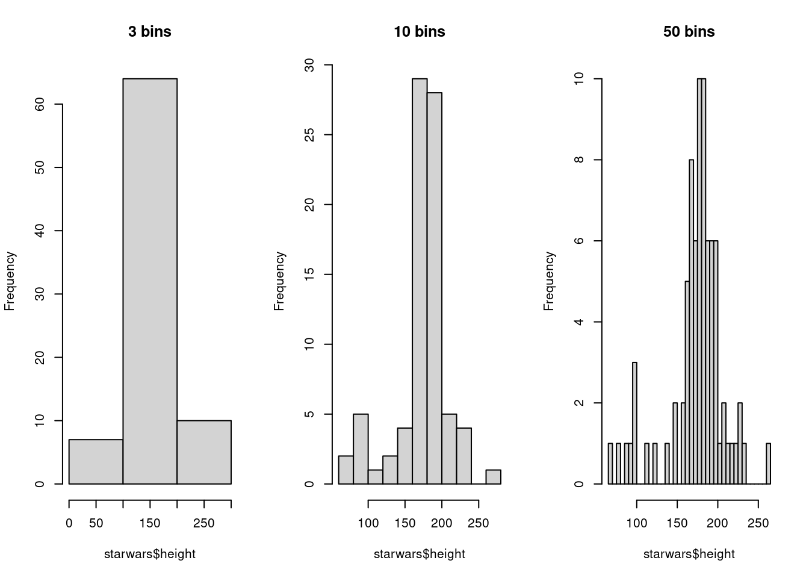
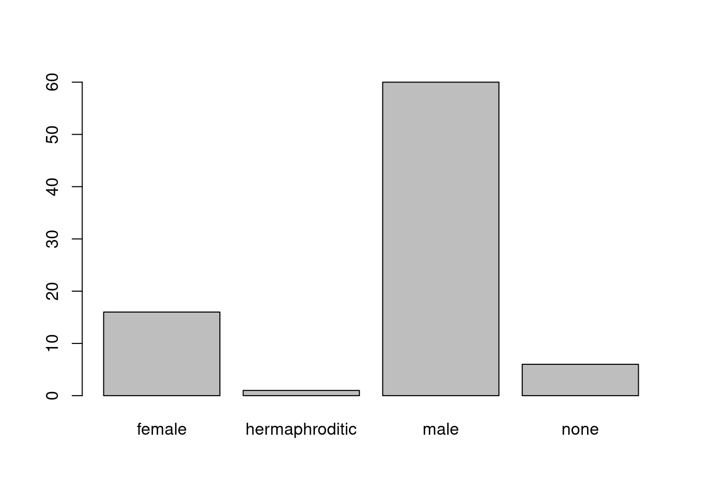
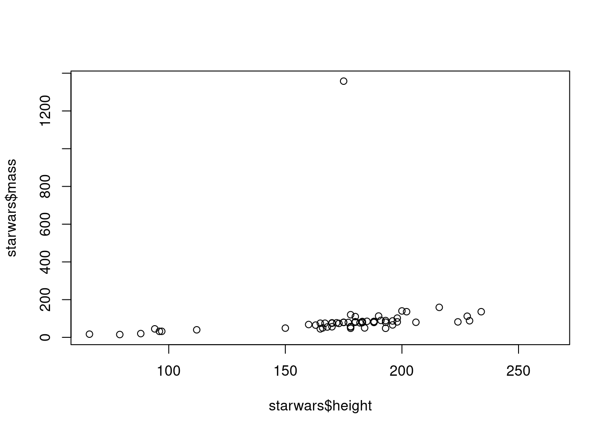
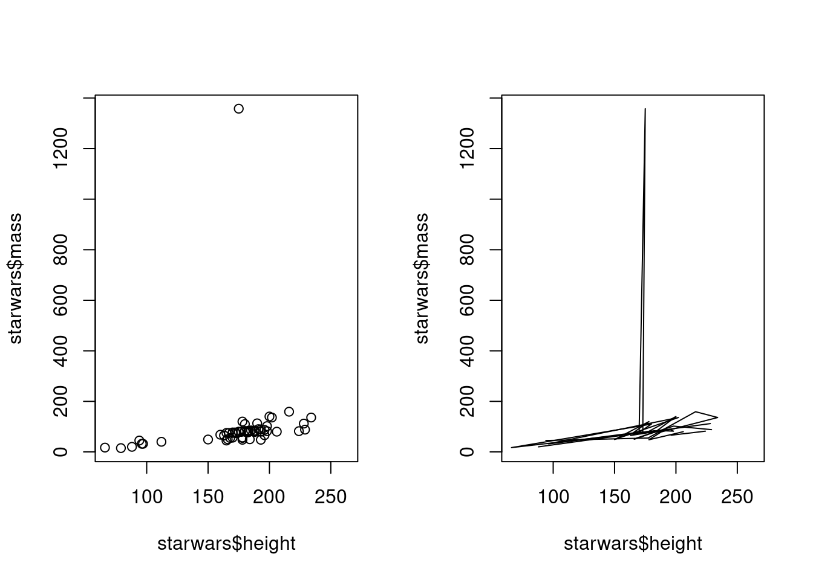
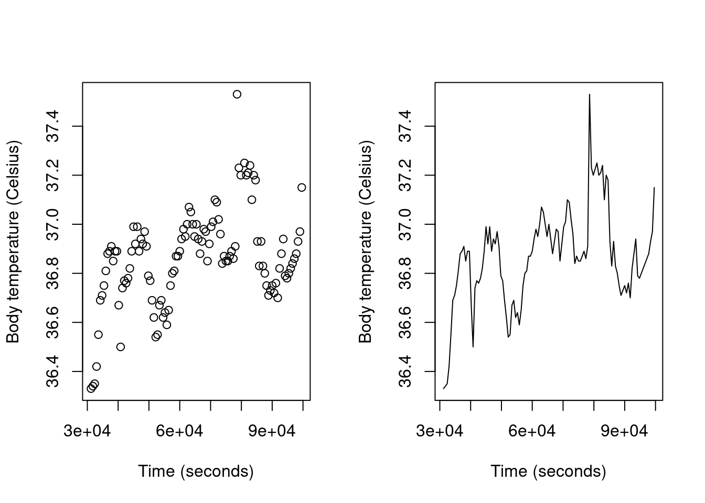

5 Visualizing Data
In this chapter we will learn how to make simple graphs using R.
5.1 The Good, the Bad, and the Ugly
This video will introduce you to the importance of visualization in data science, and how it can be used effectively (or ineffectively).
Slides: PDF
There are many ways that we can visualize the same data. These pictures of data are called “graphs”. Some of these ways may be good, but many of them will be bad.
A picture is worth thousand words…
…and a good graph is clearer than a table of data.
In pre-modern times, our ancestors did not have to worry about tables of data (or words). But they did have to interpret patterns in what they saw.
We are stuck with the same brains, and so while a column of numbers doesn’t mean much, if we can transform that column into a picture then patterns can become much clearer.
Why create graphs?
- To quickly understand patterns in the data.
- To spot problems in the data (outliers, or checking that data makes sense with your expectations)
5.1.1 Example: Challenger Disaster
In 1985 the space shuttle Challenger exploded shortly after launch, killing all the astronauts on-board. An investigation found that this was probably because a rubber seal had become too cold and brittle, due to cold weather on the launch day.
The investigation also found that although the managers and engineers knew that this was a potential issue, they had decided to go ahead with the launch anyway. But the engineers presented their concerns to their managers in the form of tables of numbers like this. Would you have looked at this and thought “Clearly we should not launch today?”

Visualization expert Edward Tufte suggested that clearer methods of presenting the data, such as a graph like this one, could have made a stronger case for delaying the launch:
5.2 Data in R
Before we begin to make our own graphs, we need to learn some terminology for describing the underlying data.
Slides: PDF
We usually want to store numerical data in tables, just like you might do with spreadsheet software like Microsoft Excel or Google Sheets. For example, instead of the separate x_coords and y_coords vectors from the graph in the previous sections, we would often be working with these as separate columns of a single table:
| x_coords | y_coords |
|---|---|
| 1 | 2 |
| 3 | 4 |
Because the R programming language is designed for analyzing data, it comes with a built-in data structure for storing tables of data: the dataframe.
We will learn how to create dataframes later in this book. For now, I will just give you pre-existing dataframes that we can analyze. If you want to follow along with these examples in RStudio, you can run this line of code in the Console:
That creates an R variable called df that holds the table of our two points. If we enter the name of the variable at the Console, R will print out the dataframe stored in the variable:
df x_coords y_coords
1 1 2
2 3 4As you can see, this contains the same data as the table above, albeit not formatted quite as nicely (the default formatting of dataframes in R is not particularly pretty, but that is another thing we will learn to do in the future!).
Our dataframe is broken down into various parts:
Each row represents an observation of some thing. For example, the first row represents measurements taken from one thing, and the second row represents measurements taken from a different thing.
Each column represents a different variable, or quantity that we are measuring.
Note that we are reusing the word variable here. We have already encountered one type of variable in the R programming language, as a way to store and reference objects and data in our computer.
Now we have encountered a new use: variables as measurements from the real world, which exist as a columns in a table.
These two concepts of a variable are different, even though we use the same word, “variable” to refer to each of them. I will be using “variable” for both of them throughout this book, and you will need to deduce from the context whether I am talking about a programming variable in R or a column variable that measures something in the real world. (If it could be ambiguous, I might refer to an “R variable” or a “column” to prevent confusion.)
The columns of an R dataframe are actually vectors! I.e. a dataframe is essentially just a bunch of vectors of the same length. This means that the rules that apply to a vector also apply to a dataframe column. For example, a dataframe column can only contain one type of data (e.g. just numbers, or just character strings), just like a vector.
We can get a single column from a dataframe using the
$operator after the dataframe’s variable. For example, to refer to thex_coordscolumn from ourdfdataframe, we could write:df$x_coords[1] 1 3And we get back a vector of the two values from that column!
We have already talked about the specific types of data that the R programming language is aware of, such as numbers, character strings, and Boolean values.
But there are also more abstract concepts of data that a column variable can contain. For example:
Continuous variables: we say that a column variable is continuous if it can feasibly be any number. For example, measurements of the height of different humans is continuous, because you could be 200cm tall, or 201cm tall, or 200.5cm tall, or 200.75cm tall (etc.). The values between any two values are also valid values for a continuous variable to take on.
Discrete variables: we say that a variable of numbers is discrete if it can only contain particular values. For example, the year is discrete, because it could be 2023 or 2024, but it cannot be 2023.5.
- Count variables are a particular sub-type of discrete variable. As you might guess from the name, this is when the variable indicates how many there are of something.
Categorical variables contain labels, text, or something other than numbers. For example, colors (red, blue, green, etc.) would be categorical values.
Categorical variables can be unordered, such as the color example, or…
They can be ordered, in which case we refer to them as ordinal variables. For example, if a variable of ratings can contain the values “good”, “average”, or “bad”, then this would be considered an ordinal variable since there is an ordering to these values.
Here is how these different abstract types of variables could be concretely recorded in R in the columns of a dataframe (note that we have not yet encountered all of these R data types):
| Type of variable | Type of R data |
|---|---|
| Continuous | Numerical |
| Discrete/count | Numerical, integer (p. ??) |
| Categorical | Numerical, character, factor (p. ??) |
5.3 One numerical variable: histograms
How can we visualize a single column of data by itself? And why would we want to do this?
Let’s use a dataset that is included in the tidyverse R package which contains information about different characters from the Star Wars franchise.
You can load the dataset in RStudio by loading the tidyverse package (which you installed in Section 3.10.1) by running library(tidyverse). The dataset will then be available to you as a dataframe stored in an R variable called starwars.
Here is an example of the data stored in the starwars dataframe: ::: {.cell hash=‘05_visualization_chapter_cache/html/unnamed-chunk-5_069e7b90eee93c4d5945aac111f22bcd’}
starwars# A tibble: 87 × 14
name height mass hair_…¹ skin_…² eye_c…³ birth…⁴ sex gender homew…⁵
<chr> <int> <dbl> <chr> <chr> <chr> <dbl> <chr> <chr> <chr>
1 Luke Skywa… 172 77 blond fair blue 19 male mascu… Tatooi…
2 C-3PO 167 75 <NA> gold yellow 112 none mascu… Tatooi…
3 R2-D2 96 32 <NA> white,… red 33 none mascu… Naboo
4 Darth Vader 202 136 none white yellow 41.9 male mascu… Tatooi…
5 Leia Organa 150 49 brown light brown 19 fema… femin… Aldera…
6 Owen Lars 178 120 brown,… light blue 52 male mascu… Tatooi…
7 Beru White… 165 75 brown light blue 47 fema… femin… Tatooi…
8 R5-D4 97 32 <NA> white,… red NA none mascu… Tatooi…
9 Biggs Dark… 183 84 black light brown 24 male mascu… Tatooi…
10 Obi-Wan Ke… 182 77 auburn… fair blue-g… 57 male mascu… Stewjon
# … with 77 more rows, 4 more variables: species <chr>, films <list>,
# vehicles <list>, starships <list>, and abbreviated variable names
# ¹hair_color, ²skin_color, ³eye_color, ⁴birth_year, ⁵homeworld:::
We might be interested in visualizing the heights of different Star Wars characters. Maybe we want to know if there are lots of tall characters and not many short ones.
A graph of a single variable shows us the distribution of that variable. A good type of graph to visualize the distibution of a single continuous variable (like the height column) is a histogram.
Here is how we can create a histogram of the height column with the plot() function:
hist(x = starwars$height)
Note how:
We used the
$operator to select theheightcolumn as a vector of numbers to go on the x-axis.The x-axis of heights has been broken up into a series of bars which we call bins.
The length of each bin is the number of observations (the “frequency”) that fall into that bin (i.e. the number of Star Wars characters with a height in the range of that bin).
- For example, the tallest bin catches the characters with a height between about 160-180 centimeters (cm). There seem to be about 28 characters in the dataset with a height in that range. (If you prefer the old Imperial measurement system, then 2.5cm is about 1 inch, so 100cm = 3’4”, 150cm = 5’, 200cm = 6’8”, etc.)
R has guessed the number of bins for us. Sometimes you will want to customize this, and we can override the default by setting the breaks parameter of the hist() function. For example, we can force the histogram to contain just 5 bins:
hist(x = starwars$height, breaks = 5)
R will recalculate the range of the new bins, and recount how many observations fall into each bin.
Exercise: Find the tallest bin in the 5-bin histogram. What is the range of heights of Star Wars characters in this bin? Approximately how many characters are in this bin? Recall that one of the purposes of a graph is to see if the data fits our expectations - does this make sense as the most common height range to find in the Star Wars movies?
We can also create a histogram with a lot of bins, e.g. 100 bins:
hist(x = starwars$height, breaks = 100)
Picking the right number of bins is a bit like Goldilocks tasting porridge: there’s a sweet spot in the middle, but it’s a bit subjective.
If we have too few bins then we destroy any patterns in the variable.
If we have two many bins then we see a jagged pattern caused by random variation rather than the true shape of the distribution.
Compare these three histograms with different numbers of bins:

The middle histogram shows us that while humans (and similar-sized creatures) are predominant even a long time ago in galaxies far, far away, there is also a clump of shorter creatures with heights below 100cm.
However, that shape is obscured in the plot on the left with just three bins. With too few bins, we destroy any fine grained shape in the distribution.
It is equally hard to see the overall shape in the right-hand histogram, because there are so many bins that our eyes are distracted by the sharp transitions between neighboring bins. However, these patterns are caused by random variation, i.e. by accidentally having a few more Star Wars characters in one bin.
5.4 One categorical variable: bar charts
We can also visualize the distribution of a categorical variable. We gain use a graph with bars, but whereas in a histogram we had to divide the x-axis into bins, we now have existing categories in the variable.
We can visualize the distribution by showing the number of values in each category (the frequency of each category).
To see how, let’s pick the sex variable from the starwars dataframe. Here’s what the first few rows looked like:
| name | sex |
|---|---|
| Luke Skywalker | male |
| C-3PO | none |
| R2-D2 | none |
| Darth Vader | male |
| Leia Organa | female |
| Owen Lars | male |
The first thing we need to do is count the number of values of each sex in the sex column. We can do this with the table() function:
table(starwars$sex)
female hermaphroditic male none
16 1 60 6 We can then use the barplot() function to make a bar graph of those frequencies:
h <- table(starwars$sex)
barplot(h)
Note that saving the table to a variable (which we have called h) is optional - we could instead nest the table() function inside the barplot() function like this:
barplot(table(starwars$sex))
Tip
5.4.1 Nesting vs sequential functions
When should you nest functions and when should you run them sequentially?
In general, nested functions can be harder to read. It’s fine if you only have two or three, but nesting more than that results in a lot of parentheses and arguments that are hard to sort out.
We can instead run each function one at a time, and save the output in a new variable. However, if we only want to use that variable once (in the next function), then we end up creating a lot of variables that we don’t really need.
In the next chapter we will learn about a new operator (called a pipe) that will allow us to run functions sequentially and avoid creating lots of intermediate variables.
5.5 Two variables: scatter plots
When we have two or more variables, we often want to see how these variables covary, i.e. how does the distribution of one variable differ at different values of another variable.
If we have two continuous variables, then we usually visualize their covariation with a scatter plot. You have probably seen graphs like tis before, in which we draw dots at meeting points of \(x\) and \(y\) values.
In R, we can create simple scatter plots with the plot() function, such as this graph of mass vs. weight of Star Wars characters:
plot(x = starwars$height, y = starwars$mass)
Note the two parameters that we pass arguments to,
xandy, for the columns of data that we want to plot on the x and y axes respectively.When we talk about a scatter plot of “A vs. B”, by convention A is the variable that we are plotting on the y-axis. I.e. we would say that the graph above shows “mass vs height”, not “height vs. mass”.
A final convention is that the x-axis contains the variable which we think probably explains the other one. I.e. I think it makes sense to think as height causing changes in mass, not mass causing changing in height, since an increase in height tends to make you weigh more. However, as middle age has taught me, an increase in mass does not necessarily lead to a change in height…
5.6 Trends: line graphs
Another type of graph that you may encounter for two continuous variables is the line graph.
However, it is important to note that a line graph is not appropriate for many datasets.
Here’s why. When we connect points with a line, we are implying that there is some connection between those points. Typically we connect points in the direction of the x-axis, going from left to right. By drawing a line between, for example, the points (1,1) and (2,3) we are implying that a particular thing had the y-axis attribute equal to 1 when x=1, and then when \(x=2\) that same thing had changed its y-axis attribute to a value of 3.
In other words, we should only draw a line graph to connect points if those points represent sequential observations of the same thing. A line graph shows us changes in values, whereas a scatter plot typically shows independently observed values of the same thing.
In would be bad, for example, to use a line graph to show the mass vs. height of Star Wars characters, because there is no reason to connect the point for Jabba the Hutt to the point for C-3PO1. These rows in the dataset are completely separate things, not two observations of the same thing. If we compare such a line graph to the previous scatter plot that we made, we can clearly see that the line graph looks awful:

We typically use line plots when we are measuring something repeated over time. Time is then the sequential value on the x-axis (because time in graphs always goes from left to right). A dataset that contains repeated observations of the same thing over time is called a time series.
For example, here is a scatter plot and a line graph showing the body temperature of a beaver over time. All the body temperature measurements are from the same beaver, so this is a time series and it makes sense to connect the points. In fact, it is actually easier to understand the line graph than a scatter plot of the same data, because it is hard for our brain to mentally draw the connecting lines in the scatter plot.
beaver_1_plus <- beaver1 %>%
mutate(
hour = time %/% 100,
minutes = time %% 100,
day_and_time = ddays(day-346) + dhours(hour) + dminutes(minutes)
)
par(mfrow = c(1, 2))
plot(
beaver_1_plus$day_and_time,
beaver_1_plus$temp,
xlab = "Time (seconds)",
ylab = "Body temperature (Celsius)"
)
plot(
beaver_1_plus$day_and_time,
beaver_1_plus$temp,
xlab = "Time (seconds)",
ylab = "Body temperature (Celsius)",
type = "l"
)
par(mfrow = c(1, 1)) # Back to the original graphics deviceWe can create a line graph using the plot() function with the additional argument type = "l", for example:
plot(x = column_1, y = column_2, type = "l")We supply the character "l" to the type parameter to indicate that we want lines in this graph.
5.7 Best practices for graphs
TODO: show some good and bad graphs to illustrate these points.
- Communicate as much information as possible with as little ink as possible
- White space is good
- Excessive use of color is bad.
- Fun and artistic infographics often obscure the actual data.
- Create graphs that meet the expectations of the viewer, and be explicit when you do something different.
- Axis ranges (start at 0, or be clear if not. Don’t start elsewhere to exaggerate a small difference.)
- Direction of data on axis. (left to right, and bottom to top)
- Time on x-axis
- Scales on subplots
- Make comparisons easy.
- Lengths, not areas.
- Side-by-side comparisons - don’t make people move things mentally to see how they are different.
Label your graphs.
Avoid 3D graphs like the plague.
Nobody suggest this to JJ Abrams…↩︎